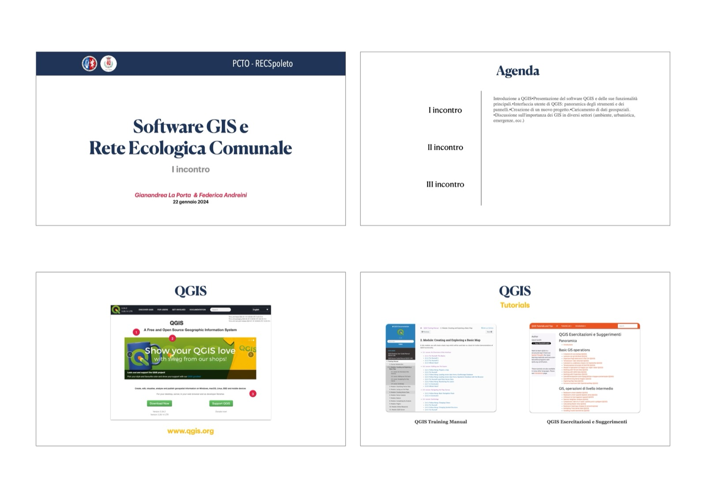

Allegato I
Diapositive delle presentazioni utilizzate durante gli eventi di disseminazione dei risultati della ricerca
Attività PCTO (Percorsi per le Competenze Trasversali e l’Orientamento) su biodiversità e reti ecologiche





Incontro pubblico: Diventare un citizen scientist monitoraggio della fauna minore


Convegno Fauna 2024 con contributo dal titolo: La conservazione delle libellule nelle campagne


Convegno Fauna 2025 con contributo dal titolo: Fauna e Reti ecologiche: progettare connessioni per la biodiversità